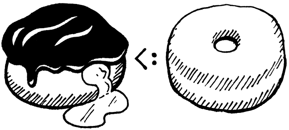

继承
我们曾经是海中的一团水珠，然后是鱼，然后是蜥蜴和老鼠，然后是猴子，以及介于两者之间的数百种生物。这只手曾经是鳍，这只手曾经是爪子！在我的人嘴里，我有狼的尖牙、兔子的凿牙和牛的磨牙！我们的血液和我们曾经生活的大海一样咸！当我们受到惊吓时，我们皮肤上的毛发会竖起来，就像我们有毛时一样。我们是历史！我们在成为我们的过程中经历过的一切，我们仍然是。
-- Terry Pratchett,A Hat Full of Sky
你相信吗？我们已经到了第二部分的最后一章。几乎完成了第一个 Lox 解释器。上一章是一大堆相互交织的面向对象特性。我无法将它们彼此分开，但我确实设法解开了其中的一部分。在本章中，我们将通过添加继承来完成 Lox 的类支持。
继承出现在面向对象的语言中，一直追溯到第一个语言，Simula。早期，Kristen Nygaard 和 Ole-Johan Dahl 在他们编写的模拟程序中注意到跨类的共性。继承为他们提供了一种为相似部分重用代码的方法。
你可以说所有其他语言都从 Simula继承了它。*嘿-哦！我会，呃，看看自己。
13.1 超类和子类
鉴于这个概念是“继承”，你会希望他们选择一个一致的比喻并将它们称为“父类”和“子类”，但这太容易了。很久以前，CAR Hoare 创造了术语“子类”来指代改进另一种类型的记录类型。Simula 借用该术语来指代从另一个继承的类。我不认为是在 Smalltalk 出现之前，有人翻转了拉丁前缀以获得“超类”来指代关系的另一方。在 C++ 中，您还会听到“基类”和“派生类”。我主要坚持使用“超类”和“子类”。
“Super-”和“sub-”在拉丁语中分别表示“上面”和“下面”。将继承树想象成根在顶部的家谱——子类在图中的超类下方。更一般地说，“子”是指提炼或包含在一些更一般的概念中的事物。在动物学中，子类是对更大类生物的更精细分类。
在集合论中，一个子集包含在一个更大的超集中，该超集具有该子集的所有元素，甚至可能更多。集合论和编程语言在类型论中相遇。在那里，你有“超类型”和“子类型”。
在静态类型的面向对象语言中，子类通常也是其超类的子类型。假设我们有一个 Donut 超类和一个 BostonCream 子类。每个 BostonCream 也是 Doughnut 的实例，但可能存在不是 BostonCreams 的甜甜圈对象（如 Crullers）。
将类型视为该类型所有值的集合。所有 Donut 实例的集合包含所有 BostonCream 实例的集合，因为每个 BostonCream 也是一个 Doughnut。所以 BostonCream 是一个子类，一个子类型，它的实例是一个子集。这一切都排成一行。

我们在 Lox 中支持继承的第一步是在声明类时指定超类的方法。语法有很多种。C++ 和 C#在子类名称后放置 一个:，然后是超类名称。Java 使用extends代替冒号。Python 将超类放在类名后的括号中。Simula 将超类的名称放在关键字class之前。
在游戏的后期，我宁愿不向词法分析器添加新的保留字或标记。我们没有extendsor even:，所以我们将遵循 Ruby 并使用小于号 (<)。
class Doughnut {
// General doughnut stuff...
}
class BostonCream < Doughnut {
// Boston Cream-specific stuff...
}
为了将其纳入语法，我们在现有的classDecl规则中添加了一个新的可选子句。
classDecl → "class" IDENTIFIER ( "<" IDENTIFIER )?
"{" function* "}" ;
在类名之后，有一个<后跟着超类的名称。超类子句是可选的，因为您不必拥有超类。与 Java 等其他一些面向对象的语言不同，Lox 没有任何东西都继承自的根“Object”类，因此当您省略超类子句时，该类没有超类，甚至没有隐式超类。
在类声明的 AST 节点中捕获这个新语法。
"Block : List<Stmt> statements",
"Class : Token name, Expr.Variable superclass," +
" List<Stmt.Function> methods",
"Expression : Expr expression",
// tool/GenerateAst.java, in main(), replace 1 line
您可能会对我们将超类名称存储为 Expr.Variable 而不是token感到惊讶。语法将超类子句限制为单个标识符，但在运行时，该标识符被评估为变量访问。在早期解析器将名称包装在 Expr.Variable 中为我们提供了一个对象，解析器可以将解析信息挂起。
新的解析器代码直接遵循语法。
Token name = consume(IDENTIFIER, "Expect class name.");
Expr.Variable superclass = null;
if (match(LESS)) {
consume(IDENTIFIER, "Expect superclass name.");
superclass = new Expr.Variable(previous());
}
consume(LEFT_BRACE, "Expect '{' before class body.");
// lox/Parser.java, in classDeclaration()
一旦（可能）解析了一个超类声明，就将它存储在 AST 中。
consume(RIGHT_BRACE, "Expect '}' after class body.");
return new Stmt.Class(name, superclass, methods);
}
// lox/Parser.java, in classDeclaration(), replace 1 line
如果不解析超类子句，则超类表达式将为null.必须确保接下来Resolver过程验证(later passes check)这一点。其中第一个是解析器
define(stmt.name);
if (stmt.superclass != null) {
resolve(stmt.superclass);
}
beginScope();
// lox/Resolver.java, in visitClassStmt()
类声明 AST 节点有一个新的子表达式，因此遍历并解析它。由于类通常在顶层声明，超类名称很可能是一个全局变量，所以这通常不会做任何有用的事情。但是，Lox 甚至允许在块内进行类声明，因此超类名称可能引用局部变量。在这种情况下，我们需要确保它已得到解析。
因为即使是好心的程序员有时也会写出奇怪的代码，所以当我们在这里时，需要担心一个愚蠢的边缘情况。看看这个：
class Oops < Oops {}
这不可能做任何有用的事情，如果我们让 运行时 尝试执行它，它将打破解释器对继承链中没有循环的期望。最安全的做法是静态检测这种情况并将其报告为错误。
define(stmt.name);
if (stmt.superclass != null &&
stmt.name.lexeme.equals(stmt.superclass.name.lexeme)) {
Lox.error(stmt.superclass.name,
"A class can't inherit from itself.");
}
if (stmt.superclass != null) {
// lox/Resolver.java, in visitClassStmt()
假设代码解析无误，AST 将传送到解释器。
public Void visitClassStmt(Stmt.Class stmt) {
Object superclass = null;
if (stmt.superclass != null) {
superclass = evaluate(stmt.superclass);
if (!(superclass instanceof LoxClass)) {
throw new RuntimeError(stmt.superclass.name,
"Superclass must be a class.");
}
}
environment.define(stmt.name.lexeme, null);
// lox/Interpreter.java, in visitClassStmt()
如果该类有一个超类表达式，就评估它。因为这可能会评估为某种其他类型的对象，所以必须在运行时检查想要成为超类的东西实际上是一个类。如果我们允许这样的代码，就会发生不好的事情：
var NotAClass = "I am totally not a class";
class Subclass < NotAClass {} // ?!
假设检查通过，我们继续。执行类声明会将类的语法表示（其AST 节点）转换为其运行时表示，即 LoxClass 对象。我们也需要访问超类。我们将超类传递给构造函数。
methods.put(method.name.lexeme, function);
}
LoxClass klass = new LoxClass(stmt.name.lexeme,
(LoxClass)superclass, methods);
environment.assign(stmt.name, klass);
// lox/Interpreter.java, in visitClassStmt(), replace 1 line
构造函数将其存储在一个字段中。
LoxClass(String name, LoxClass superclass,
Map<String, LoxFunction> methods) {
this.superclass = superclass;
this.name = name;
// lox/LoxClass.java, constructor LoxClass(), replace 1 line
我们在这里声明：
final String name;
final LoxClass superclass;
private final Map<String, LoxFunction> methods;
// lox/LoxClass.java, in class LoxClass
这样，我们就可以定义作为其他类的子类的类。现在，拥有一个超类实际上做了什么？
13.2 继承方法
从另一个类继承意味着超类的一切都应该或多或少地传给子类。在静态类型语言中，这有很多含义。子类也必须是子类型，并且内存布局是受控的，这样你就可以将子类的实例传递给需要超类的函数，它仍然可以正确访问继承的字段。
这个简单易懂的指南的一个更漂亮的名字是Liskov 替换原则。Barbara Liskov 在面向对象编程形成时期的一次主题演讲中介绍了它。
Lox 是一种动态类型的语言，因此我们的要求要简单得多。基本上，这意味着如果您可以在超类的实例上调用某些方法，则在给定子类的实例时也应该能够调用该方法。换句话说，方法是从超类继承的。
这符合继承的目标之一——为用户提供一种跨类重用代码的方法。在我们的解释器中实现它非常容易。
return methods.get(name);
}
if (superclass != null) {
return superclass.findMethod(name);
}
return null;
// lox/LoxClass.java, in findMethod()
这就是它的全部内容。当我们在一个实例上查找一个方法时，如果我们没有在该实例的类中找到它，我们就会递归遍历超类链并在那里查找。试一试：
class Doughnut {
cook() {
print "Fry until golden brown.";
}
}
class BostonCream < Doughnut {}
BostonCream().cook();
好了，一半的继承特性只用了三行 Java 代码就完成了。
13.3 调用超类方法
在findMethod()沿着超类链向上走之前，我们在当前类上寻找一个方法。如果子类和超类中都存在同名方法，则子类优先或覆盖超类方法。有点像内部作用域中的变量如何影响外部作用域。
如果子类想要完全替换某些超类行为，那就太好了。但是，在实践中，子类通常希望改进超类的行为。他们想做一些特定于子类的工作，但也执行原始超类的行为。
但是，由于子类已经覆盖了该方法，因此无法引用原始方法。如果子类方法试图通过名称调用它，它只会递归地命中它自己的覆盖。我们需要一种方式来表达“调用此方法，但直接在我的超类上查找它并忽略我的覆盖”。Java用super，我们将在 Lox 中使用相同的语法。这是一个例子：
class Doughnut {
cook() {
print "Fry until golden brown.";
}
}
class BostonCream < Doughnut {
cook() {
super.cook();
print "Pipe full of custard and coat with chocolate.";
}
}
BostonCream().cook();
如果你运行它，它应该打印：
Fry until golden brown.
Pipe full of custard and coat with chocolate.
我们有一个新的表达形式。super关键字后跟一个点和一个标识符，用于查找具有该名称的方法。与this调用不同，搜索从超类开始。
13.3.1 语法
对于this，关键字的作用有点像一个神奇的变量，而表达式就是那个单独的token。但是对于super，后续的.和属性名称是super表达式不可分割的部分。你不能单独拥有一个裸supertoken。
print super; // Syntax error.
primary因此，我们在语法中添加到规则中的新子句也包括属性访问。
primary → "true" | "false" | "nil" | "this"
| NUMBER | STRING | IDENTIFIER | "(" expression ")"
| "super" "." IDENTIFIER ;
通常，super表达式用于方法调用，但与常规方法一样，参数列表不是表达式的一部分。相反，super 调用是一个super，后跟着一个函数调用。与其他方法调用一样，您可以获得超类方法的句柄并单独调用它。
var method = super.cook;
method();
所以super表达式本身只包含super关键字的token和正在查找的方法的名称。因此对应的语法树节点是：
"Set : Expr object, Token name, Expr value",
"Super : Token keyword, Token method",
"This : Token keyword",
// tool/GenerateAst.java, in main()
为新节点生成的代码在附录 II中。
按照语法，新的解析代码进入我们现有的primary()方法。
return new Expr.Literal(previous().literal);
}
if (match(SUPER)) {
Token keyword = previous();
consume(DOT, "Expect '.' after 'super'.");
Token method = consume(IDENTIFIER,
"Expect superclass method name.");
return new Expr.Super(keyword, method);
}
if (match(THIS)) return new Expr.This(previous());
// lox/Parser.java, in primary()
前导super关键字告诉我们我们已经命中了一个super表达式。之后我们使用预期的.和一个方法名称。
13.3.2 语义
早些时候，我说过super表达式从“超类”开始方法查找，但是哪个超类呢？天真的答案是 this的超类?，调用周围方法的对象。在很多情况下，这巧合地产生了正确的行为，但这实际上并不正确。仔细看一下：
class A {
method() {
print "A method";
}
}
class B < A {
method() {
print "B method";
}
test() {
super.method();
}
}
class C < B {}
C().test();
将此程序翻译成 Java、C# 或 C++，它将打印“A method”，这也是我们希望 Lox 执行的操作。当这个程序运行时，在 test()的主体内，this是 C 的一个实例。C 的超类是 B，但这不是查找应该开始的地方。如果是这样，我们会打 B method()`。
相反，查找应该从包含superexpression的类的超类开始。在这种情况下，因为test()是在 B 内部定义的 ，所以super它内部的表达式应该开始查找B的超类——A。

执行流程看起来像这样：
我们调用
test()C 的一个实例。即进入
test()继承自B的方法。即调用super.method()。B 的超类是 A，因此调用A 的
method()，程序打印“A method”。
因此，为了评估super表达式，我们需要访问围绕调用的类定义的超类。但是，在执行super表达式的解释器中，我们没有那么容易获得。
我们可以向 LoxFunction 添加一个字段来存储拥有该方法的 LoxClass 的引用。解释器将保留对当前正在执行的 LoxFunction 的引用，以便我们稍后可以在遇到super表达式时查找它。从那里，我们将获得方法的 LoxClass，然后是它的超类。
这有好多流程。在上一章中，当我们需要添加对this的支持时，我们遇到了类似的问题。在那种情况下，我们使用现有的环境和闭包机制来存储对当前对象的引用。我们可以做类似的事情来存储超类吗？好吧，如果答案是否定的，我可能不会谈论它，所以... 是的。
有没有人喜欢反问？
一个重要的区别是我们在访问方法时绑定this。可以在不同的实例上调用相同的方法，每个实例都需要自己的this.对于super表达式，超类是类声明本身的固定属性。每次你评估super表达式时，超类总是相同的。
这意味着我们可以在执行类定义时为超类创建一个一次性的环境。在定义方法之前，创建了一个新环境来将类的超类绑定到 super。

当我们为每个方法创建 LoxFunction 运行时表示时，这就是它们将在闭包中捕获的环境。稍后，当调用并this绑定方法时，超类环境成为方法环境的父类，如下所示：

好多机制，但我们会一步一步地完成它。在开始在运行时创建环境之前，需要在解析器中处理相应的作用域链。
resolve(stmt.superclass);
}
if (stmt.superclass != null) {
beginScope();
scopes.peek().put("super", true);
}
beginScope();
// lox/Resolver.java, in visitClassStmt()
如果类声明有一个超类，那么我们创建一个围绕其所有方法的新作用域。在该范围内，我们定义名称“super”。一旦我们完成了类方法的解析，就丢弃了那个作用域。
endScope();
if (stmt.superclass != null) endScope();
currentClass = enclosingClass;
// lox/Resolver.java, in visitClassStmt()
这是一个小的优化，但如果类确实有一个超类，我们只会创建超类环境。当没有超类时创建它是没有意义的，因为无论如何都没有超类可以存储在其中。
通过在作用域链中定义“super”，我们能够解析super表达式本身。
@Override
public Void visitSuperExpr(Expr.Super expr) {
resolveLocal(expr, expr.keyword);
return null;
}
// lox/Resolver.java, add after visitSetExpr()
我们完全将super token解析为变量。解析存储了解释器为找到存储超类的环境而需要走的环境链中的跃点数。
此代码在解释器中有镜像。当我们评估子类定义时，我们创建了一个新环境。
throw new RuntimeError(stmt.superclass.name,
"Superclass must be a class.");
}
}
environment.define(stmt.name.lexeme, null);
if (stmt.superclass != null) {
environment = new Environment(environment);
environment.define("super", superclass);
}
Map<String, LoxFunction> methods = new HashMap<>();
// lox/Interpreter.java, in visitClassStmt()
在该环境中，我们存储了对超类的引用——我们现在在运行时中拥有的超类的实际 LoxClass 对象。然后我们为每个方法创建 LoxFunction。这些将捕获当前环境——我们刚刚绑定“super”的环境——作为它们的闭包，按照我们的需要保留超类。完成后，我们弹出环境
LoxClass klass = new LoxClass(stmt.name.lexeme,
(LoxClass)superclass, methods);
if (superclass != null) {
environment = environment.enclosing;
}
environment.assign(stmt.name, klass);
// lox/Interpreter.java, in visitClassStmt()
我们已经准备好解释super表达式本身。有一些活动部件，因此我们将分段构建此方法。
@Override
public Object visitSuperExpr(Expr.Super expr) {
int distance = locals.get(expr);
LoxClass superclass = (LoxClass)environment.getAt(
distance, "super");
}
// lox/Interpreter.java, add after visitSetExpr()
首先，我们一直在工作的进行中。我们通过在适当的环境中查找“super”来查找周围类的超类。
当我们访问一个方法时，我们还需要绑定this到访问该方法的对象。在像doughnut.cook这样的表达式中，对象是我们从求值中得到的任何东西doughnut。在像super.cook 的super表达式中，当前对象隐式地与我们正在使用的当前对象相同。换句话说，this。即使我们正在查找超类上的方法，实例仍然是this.
不幸的是，在super表达式内部，我们没有方便的节点让解析器将跳数挂在this上面。幸运的是，我们确实控制了环境链的布局。“this”绑定的环境总是在我们存储“super”的环境中
LoxClass superclass = (LoxClass)environment.getAt(
distance, "super");
LoxInstance object = (LoxInstance)environment.getAt(
distance - 1, "this");
}
// lox/Interpreter.java, in visitSuperExpr()
将距离减去1 在那个内部环境中查找“this”。我承认这不是最优雅的代码，但它确实有效。
写一本书包含程序的每一行代码意味着我不能通过将它们作为“读者的练习”来隐藏这些技巧。
现在我们准备查找并绑定方法，从超类开始。
LoxInstance object = (LoxInstance)environment.getAt(
distance - 1, "this");
LoxFunction method = superclass.findMethod(expr.method.lexeme);
return method.bind(object);
}
// lox/Interpreter.java, in visitSuperExpr()
这几乎与查找 get 表达式方法的代码完全一样，只是我们调用findMethod()超类而不是当前对象的类。
基本上就是这样。当然，除非我们可能找不到方法。所以我们也检查一下。
LoxFunction method = superclass.findMethod(expr.method.lexeme);
if (method == null) {
throw new RuntimeError(expr.method,
"Undefined property '" + expr.method.lexeme + "'.");
}
return method.bind(object);
}
// lox/Interpreter.java, in visitSuperExpr()
搞定！用之前的 BostonCream 示例为例，试一试。假设你我都做对了，应该是先炒，再填奶油。
13.3.3 super 的非法使用
与以前的语言功能一样，当用户编写正确的代码时，我们的实现会做正确的事情，但我们没有让解释器免受错误代码的侵害。特别要考虑：
class Eclair {
cook() {
super.cook();
print "Pipe full of crème p?tissière.";
}
}
这个类有一个super表达式，但没有超类。在运行时，用于评估super表达式的代码假定“super”已成功解析并将在环境中找到。这将在这里失败，因为没有超类，因此没有超类的周围环境。JVM 将抛出异常并使我们的解释器崩溃。
呀，还有更简单的 super 错误用法：
super.notEvenInAClass();
我们可以在运行时通过检查“super”的查找是否成功来处理此类错误。但是我们可以静态地告诉你——仅仅通过查看源代码——Eclair没有超类，因此没有super表达式可以在其中工作。同样，在第二个例子中，我们知道super表达式甚至不在方法体内。
尽管 Lox 是动态类型的，但这并不意味着我们要将所有内容推迟到运行时。如果用户犯了错误，我们希望帮助他们尽快找到它。所以我们将在解析器中静态报告这些错误。
首先，我们向枚举中添加一个新案例，以跟踪当前正在访问的代码周围是哪种类。
NONE,
CLASS,
SUBCLASS
}
// lox/Resolver.java, in enum ClassType, add “,” to previous line
我们将使用它来区分何时处于具有超类和不具有超类的类中。当我们解析一个类声明时，设置它是否是一个子类。
if (stmt.superclass != null) {
currentClass = ClassType.SUBCLASS;
resolve(stmt.superclass);
// lox/Resolver.java, in visitClassStmt()
然后，当我们解析一个super表达式时，我们会检查我们当前是否在允许的范围内。
public Void visitSuperExpr(Expr.Super expr) {
if (currentClass == ClassType.NONE) {
Lox.error(expr.keyword,
"Can't use 'super' outside of a class.");
} else if (currentClass != ClassType.SUBCLASS) {
Lox.error(expr.keyword,
"Can't use 'super' in a class with no superclass.");
}
resolveLocal(expr, expr.keyword);
// lox/Resolver.java, in visitSuperExpr()
如果不是——o no！—用户犯了一个错误。
13.4 总结
我们做到了！最后一点错误处理是完成 Lox 的 Java 实现所需的最后一块代码。这是一项真正的成就，您应该为此感到自豪。在过去的十几章，上千行代码中，我们学习并实现了...
- token和词法分析，
- 抽象语法树，
- 递归下降解析，
- 前缀和中缀表达式，
- 对象的运行时表示，
- 使用访问者模式解释代码，
- 词法作用域，
- 用于存储变量的环境链，
- 控制流程，
- 带参数的函数，
- 闭包，
- 静态变量解析和错误检测，
- 类，
- 构造函数，
- 字段，
- 方法，最后，
- 继承。
我们从头开始完成所有这些工作，没有外部依赖项或神奇工具。只有你和我，我们各自的文本编辑器，Java 标准库中的几个集合类，以及 JVM 运行时。
这标志着第二部分的结束，但不是本书的结束。休息一下。也许写一些有趣的 Lox 程序并在你的解释器中运行它们。（您可能想为读取用户输入等操作添加更多本机方法。）当您神清气爽并准备就绪时，我们将开始下一次冒险。
挑战
- Lox 仅支持单继承——一个类可能有一个超类，这是跨类重用方法的唯一方法。其他语言已经探索了多种方式来更自由地跨类重用和共享能力：mixins、traits、多重继承、虚拟继承、扩展方法等。
如果你要沿着这些思路向 Lox 添加一些功能，你会选择哪个？为什么？如果您感到有勇气（此时您应该有勇气），请继续添加它。
- 在 Lox 中，与在大多数其他面向对象语言中一样，在查找方法时，我们从类层次结构的底部开始，然后逐步向上——子类的方法优于超类的方法。为了从覆盖方法中获取超类方法，您可以使用
super.
语言BETA采用相反的方法。当你调用一个方法时，它从类层次结构的顶部开始并向下工作。超类方法胜过子类方法。为了到达子类方法，超类方法可以调用inner，这有点像 的逆运算super。它链接到层次结构中的下一个方法。
超类方法控制何时何地允许子类改进其行为。如果超类方法根本不调用inner，那么子类就没有办法覆盖或修改超类的行为。
去掉 Lox 当前的覆盖和super行为，并用 BETA 的语义替换它。简而言之：
-
在类上调用方法时，优先选择类继承链上最高的方法。
-
在方法体内，对
inner的调用沿着包含 的类和this的类inner之间的继承链在最近的子类中查找具有相同名称的方法。如果没有匹配的方法，则调用inner不执行任何操作。`
例如：
```js class Doughnut { cook() { print "Fry until golden brown."; inner(); print "Place in a nice box."; } }
class BostonCream < Doughnut { cook() { print "Pipe full of custard and coat with chocolate."; } }
BostonCream().cook(); ```
这应该打印：
Fry until golden brown.
Pipe full of custard and coat with chocolate.
Place in a nice box.
- 在我介绍 Lox 的那一章中，我要求你想出一些你认为该语言缺失的特性。现在您知道如何构建解释器，实现其中一个功能。